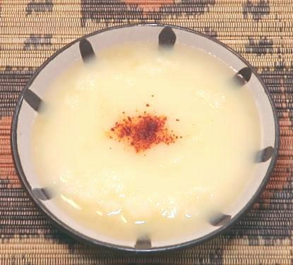
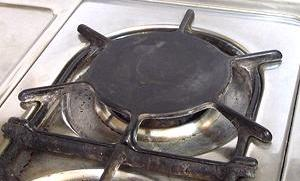
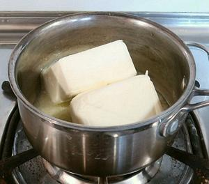
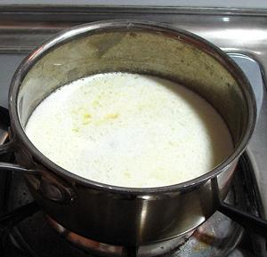
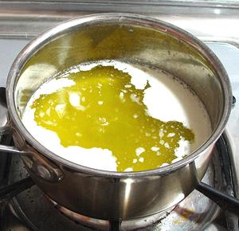
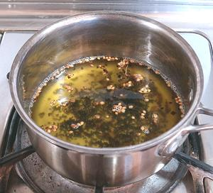
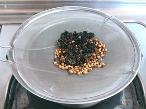
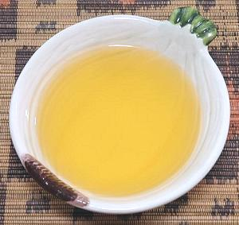

Step by step pictorial for making this essential
ingredient for Ethiopian and Eritrean cuisines. Return to
Main Page.

Select a burner on your stove that can be very precisely controlled near
the bottom of its heat range, and preferably one with a heat spreader,
as in the photo, or use some other heat spreader on the burner.

Purchase 1 pound of a top grade unsalted butter and melt it
slowly in a heavy bottomed pan. The pan in the photo is a 1-1/2 quart
tri-ply sauce pan. It would be large enough for 2 pounds of butter. Do
not disturb the butter as it melts.

Once the Butter has completely melted without being disturbed, there will
be a layer of foam on the top, and some milk solids will have fallen to
the bottom. This foam must be carefully skimmed off.
 Here the foam has been partially skimmed off, exposing the melted butter. Skim it all off and simmer the butter, skimming any additional foam. You will see bubbling as the water in the butter slowly boils off. Barely visible in the center of the pan are some bubbles. Let this boiling proceed slowly.
Eventually the bubbling will slow and be a lot more erratic, with small
bursts of bubbles rising to the surface. The temperature will start to rise
above 212°F/100°C. When it gets quite erratic and up to around
240°F/115°C, you can call it Clarified Butter, give it
a final skim and decant it off the solids in the bottom.
 Clean and dry the saucepan. Return the melted Butter to the pan and bring it back to a temperature of about 220°F/104°C. Stir in Cardamom mix and hold at temperature below 240°F/115°C for 15 minutes, stirring gently now and then.
Stir in Koseret and Besobela. Stir now and then for about
another 7 minutes, taking care the temperature doesn't rise above 240°F
or so.

Now do a final straining, passing the Ghee through an extremely fine mesh
strainer (these can be found in East / Southeast Asian markets), or a double
layer of Cheesecloth. Discard all the solids.
 Here we have the finished and Niter Kibbeh, still in it's melted state. In a tightly sealed jar, it will last for a week or so at room temperature. It will be liquid, slurry or solid depending on room temperature. The photo at the top of the page is from this batch cooled to the semi-solid slurry state. Refrigerated it will last for months.
Caution: When spooning Niter Kibbeh
out of the jar, it is important that the tools you use be totally dry. Any
moisture introduced could result in spoilage. The jar you store it in
must also have been totally dry before pouring the Niter Kibbeh into it.